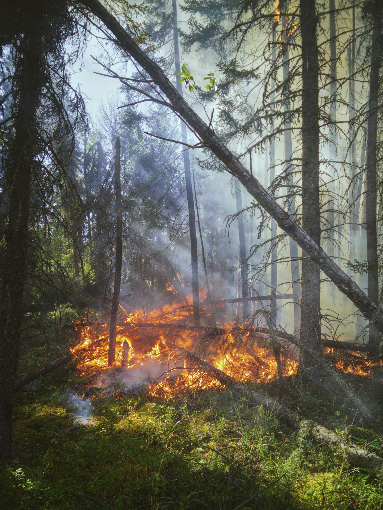

RESPOND TO THE CRISIS



Our Crisis Response Management platform offers a comprehensive solution for individuals and organizations looking to contribute to disaster relief efforts. In times of crisis, timely and coordinated responses are crucial, and our platform is designed to streamline the entire process, making it easier to navigate the complexities of relief work. With real-time updates on ongoing crises, you'll always be informed about the latest developments, allowing you to act swiftly and effectively. Whether it's natural disasters, humanitarian emergencies, or other critical situations, our platform provides up-to-date information to help guide your decisions. One of the key features of our platform is the ability to connect volunteers with local groups and opportunities. We partner with a wide range of organizations to ensure that volunteers can find roles that match their skills and availability. This makes it easier for individuals to make a meaningful contribution, whether they have just a few hours to spare or can commit to long-term involvement. From on-the-ground support to remote assistance, our platform facilitates a variety of volunteer opportunities that can suit anyone’s schedule and capabilities.
In addition to volunteer coordination, our platform provides access to a wealth of resources designed to support disaster relief efforts. Whether you're looking for guidance on best practices in emergency response, mental health support for those affected, or tools for managing logistics, we offer an extensive library of information to empower volunteers and organizations. These resources ensure that everyone involved is equipped with the knowledge they need to make a real difference in the lives of those impacted by disaster. Our platform is designed with usability in mind, offering a streamlined and intuitive interface that simplifies the process of finding and providing assistance. By reducing the barriers to entry for volunteers, we enable more people to get involved and contribute effectively. The ability to quickly connect with those in need ensures that help is delivered when and where it’s needed most.
Joining our Crisis Response Management community allows you to play an active role in supporting your community during times of hardship. By contributing your time, skills, and resources, you can help empower others and make a positive, lasting impact. In times of crisis, every action counts, and our platform ensures that your efforts are maximized for the greatest possible effect. Whether you're an experienced volunteer or new to disaster relief, our platform offers the tools, connections, and support you need to make a meaningful contribution. Together, we can create a more resilient, responsive, and empowered community that is ready to face any crisis head-on. Join us today and be part of a solution that makes a real difference when it matters most.